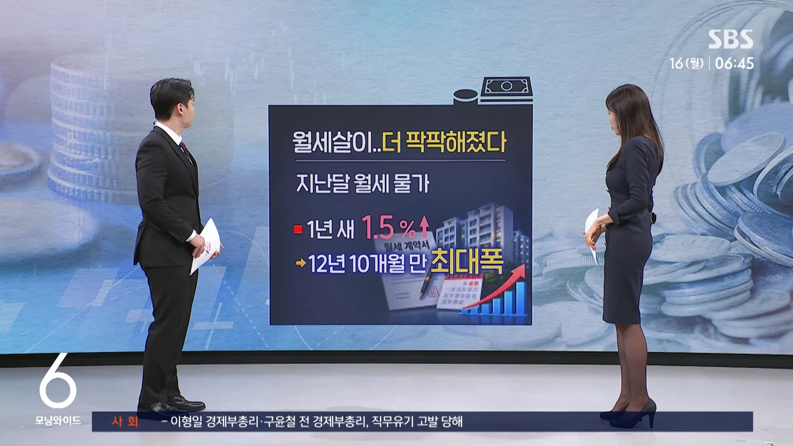
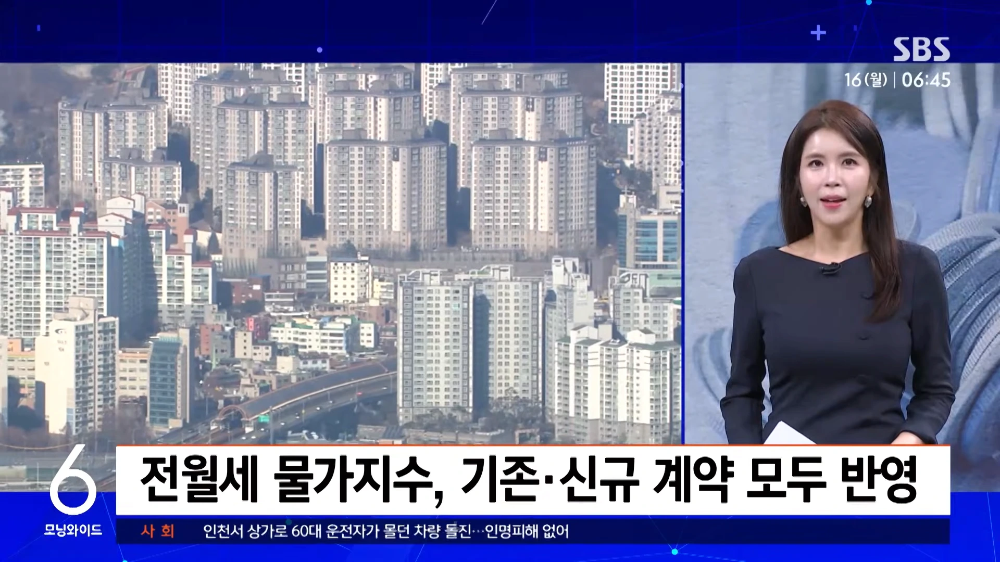
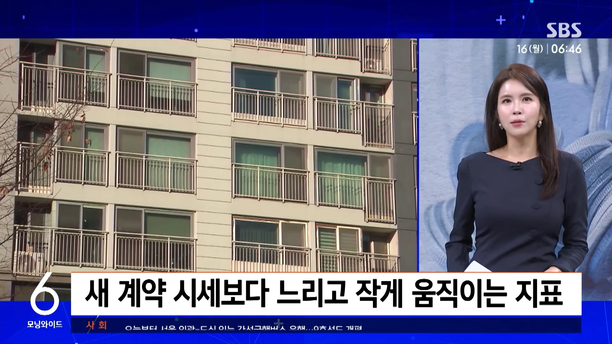
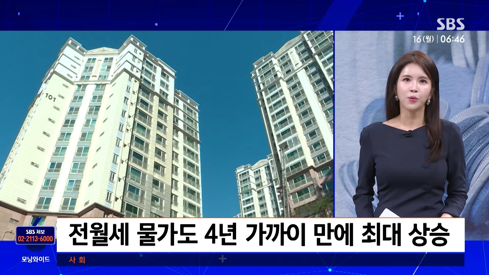
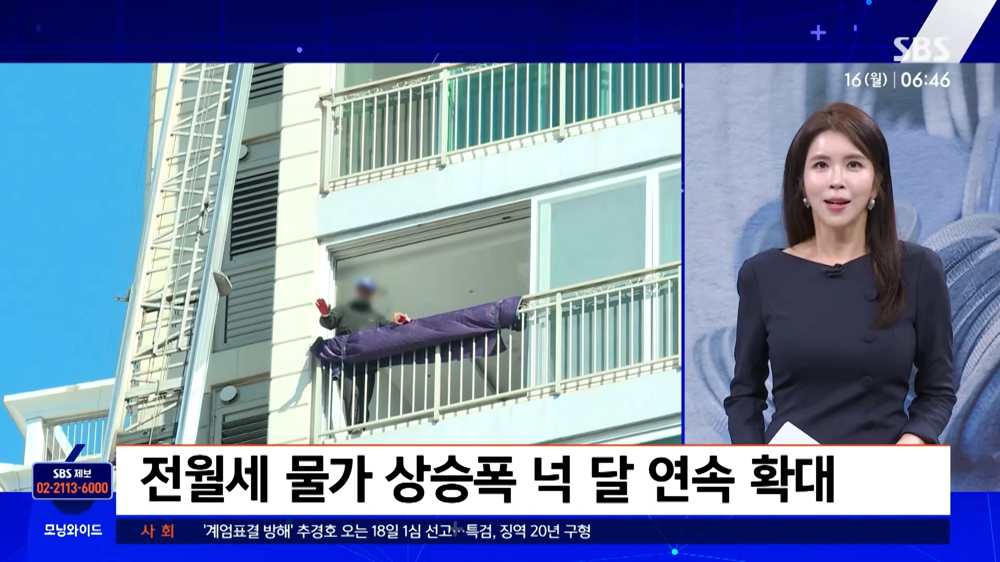
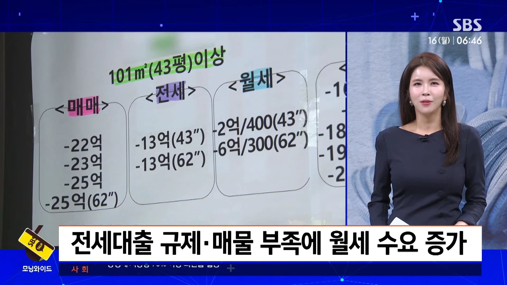
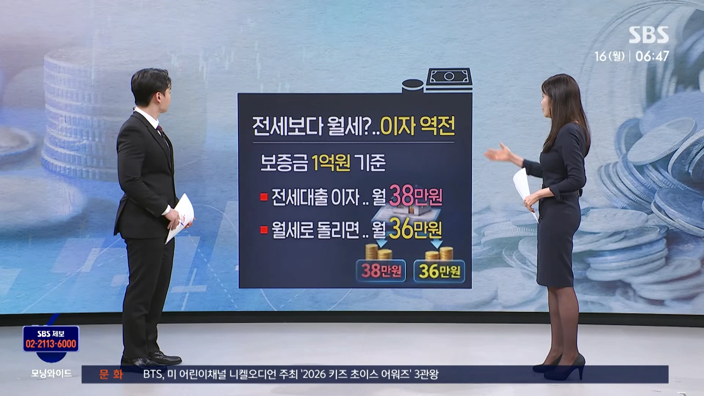
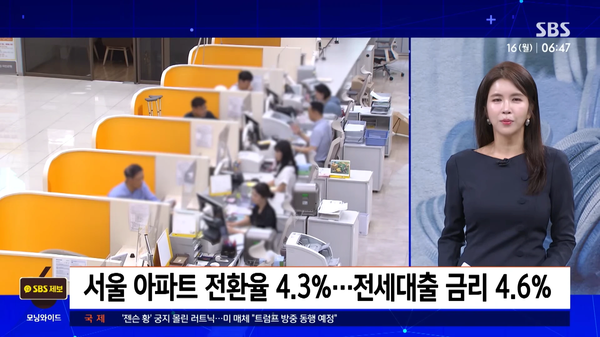
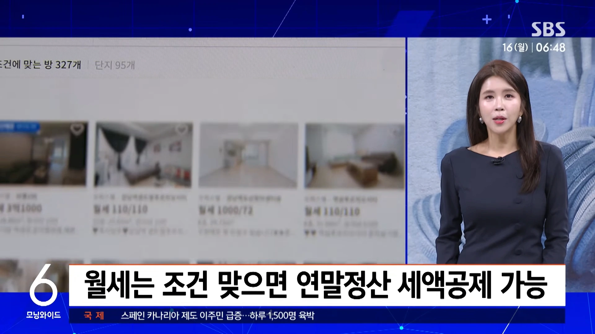
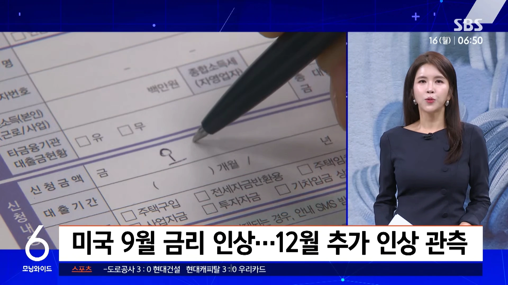
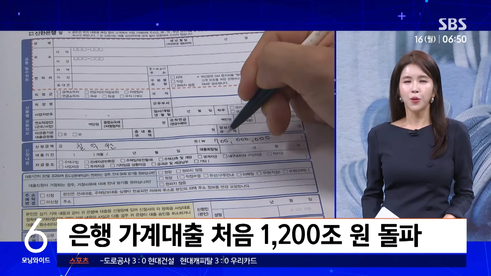
지난달 월세 물가가 1년 새 1.5% 올랐는데요.
12년 10개월 만에 가장 큰 폭으로 올랐습니다.
숫자만 보면 별것 아닌 것 같으시죠.
그런데 이 통계에 전월세 소비자물가지수는 새로 계약한 집만 보는 게 아니라 이미 살고 있는 집 월세까지 다 포함해서 평균을 낸 겁니다.
반 평균 키를 생각하시면 쉬운데요.
키 큰 친구가 전학을 와도 반 평균은 조금밖에 안 오르잖아요.
그래서 이 숫자는 원래 새 계약 시세보다 굼뜨고 작게 움직입니다.
그런 통계가 이만큼 움직였으니, 새로 집 구하는 분들 체감은 훨씬 더 컸을 겁니다.
전세까지 합친 전월세 물가도 4년 가까이 만에 가장 많이 올랐고, 넉 달째 오름폭을 키우고 있습니다.
지역별로 보면 울산이 가장 가파르고, 서울, 세종이 뒤를 잇는데요.
울산은 새집 공급이 줄어 집이 모자라면서 줄곧 1위고, 서울은 두 달째 2%대 오름세입니다.
이유는 다들 짐작하실 겁니다.
전세 구하기 요즘 하늘의 별 따기죠.
전세대출 문턱이 높아지면서 전세 매물이 귀해졌고, 밀려난 수요가 월세로 넘어가는 걸로 보입니다.
전국 주택 전월세 거래 10건 중 7건이 월세라는 통계도 있는데요.
서울 아파트는 월세 매물마저 최근 3년 평균보다 10% 넘게 적다고 하니, 고를 게 없는 상황입니다.
요즘 전세대출 이자가 같은 보증금을 월세로 돌렸을 때보다 오히려 더 비싸졌습니다.
보통 전세가 월세보다 싸다고들 하잖아요.
대출 이자를 내도 월세보다 덜 나가니까 다들 전세부터 찾았던 거죠.
이걸 따질 때 쓰는 잣대가 전월세 전환율입니다.
전세 보증금을 월세로 바꿀 때 1년에 몇 %로 쳐주느냐, 그 비율인데요.
서울 아파트는 지난 9월 4.3% 정도였습니다.
그런데 같은 달 은행 전세대출 금리는 4.6%에 가까웠거든요.
보증금 1억 원으로 계산해 볼까요.
대출로 마련하면 한 달 이자가 38만 원쯤, 같은 1억 원을 월세로 돌리면 36만 원 정도입니다.
전세 쪽이 오히려 더 나가는 건데, 1년이면 30만 원 가까이 차이가 납니다.
이게 올여름 들어 뒤집혔다는 분석인데요.
전환율은 1년 전과 거의 그대로인데, 전세대출 금리는 지난해 봄 3%대 후반에서 1%포인트 가까이 뛰었습니다.
실제로 5대 은행 전세대출은 1년 새 4조 원 넘게 줄었습니다.
전세 가구가 보증금 마련하느라 빌린 돈도, 평균으로 따지면 지난해까지 6년 새 절반 넘게 불었는데요.
금리가 오르면 그 이자 부담이 고스란히 커지는 겁니다.
게다가 월세는 조건만 맞으면 연말정산 때 세액공제도 받을 수 있죠.
물론 대출 없이 내 돈으로 보증금을 낸다면, 예금 이자만 포기하는 거라 얘기가 달라집니다.
계약 전에 직접 계산해 보시는 게 좋겠습니다.
다음 주 목요일이죠. 한국은행이 올해 마지막 회의를 여는데요.
기준금리를 추가 또 인상할 거라는 전망이 많습니다.
한은이 7월, 8월 연달아 올렸다가 지난달에는 한 번 쉬어갔죠.
그런데 그때 총재가 성장도, 물가도 8월보다 오히려 센 면이 있었다면서 돈줄 죄는 기조를 이어가겠다고 했습니다.
지난달 소비자물가가 2.8% 올라 한은 목표 2%를 꽤 웃돌았는데요.
기름값이 15% 가까이 뛴 탓만도 아닙니다.
기름과 농산물을 빼고 따진 근원물가도 오름폭을 키웠는데, 아까 얘기한 월세도 여기 들어가거든요.
미국도 9월에 3년여 만에 금리를 올렸고, 다음 달 또 올릴 거라는 얘기가 나오고요.
얼마 전 은행 가계대출이 처음 1천200조 원을 넘었죠.
빚이 빠르게 느는 것도 한은으로서는 부담입니다.
시장에서는 이번에 3%에서 3.25%로 올리고, 내년 초에는 3.5%까지 갈 거라는 관측도 나옵니다.
대출 있으신 분들은 오늘(16일) 오후 나오는 코픽스도 눈여겨보시죠.
은행들이 돈을 끌어오는 비용을 평균 낸 건데, 변동금리 주택담보대출 금리의 기준이 됩니다.
9월분은 한 달 새 0.25%포인트나 뛰었는데요.
새로 받는 대출에는 보통 다음 날부터 반영되고, 이미 받은 대출도 금리 바뀌는 날이 돌아오면 따라 움직입니다.
금리가 더 오르면 아까 말씀드린 전세대출 이자 부담도 더 커지는 만큼, 대출 계획 있으시면 고정금리, 변동금리 꼼꼼히 따져보셔야겠습니다.
댓글
수집 당시 댓글 140개
ㅇㅇ · 11.16 21:29:14
· ㅇㅇ · 11.16 21:32:45
· ㅇㅇ · 11.17 11:57:57
ㅇㅇ · 11.16 21:29:48
ㅇㅇ · 11.16 21:31:09
ㅇㅇ · 11.16 21:31:29
ㅇㅇ · 11.16 21:31:52
ㅇㅇ · 11.16 21:31:55
ㅇㅇ · 11.16 21:32:44
ㅇㅇ · 11.16 21:34:23
· ㅇㅇ · 11.16 21:34:28
· ㅇㅇ · 11.16 23:50:16
· ㅇㅇ · 11.17 01:58:31
· ㅇㅇ · 11.17 12:01:47
ㅇㅇ · 11.16 21:34:56
ㅇㅇ · 11.16 21:38:05
ㅇㅇ · 11.16 21:38:22
ㅇㅇ · 11.16 21:38:29
ㅇㅇ · 11.16 21:38:59
ㅇㅇ · 11.16 21:39:35
ㅇㅇ · 11.16 21:40:54
ㅇㅇ · 11.16 21:43:10
ㅇㅇ · 11.16 21:43:45
ㅇㅇ · 11.16 21:44:40
· ㅇㅇ · 11.16 22:04:57
· ㅇㅇ · 11.17 00:38:57
· ㅇㅇ · 11.17 09:50:30
ㅇㅇ · 11.16 21:45:52
ㅇㅇ · 11.16 21:46:56
ㅇㅇ · 11.16 21:47:37
ㅇㅇ · 11.16 21:48:23
ㅇㅇ · 11.16 21:48:28
ㅇㅇ · 11.16 21:48:49
집값이 비싸서 잼통 뽑았어
· ㅇㅇ · 11.16 21:49:02
<<??
ㅇㅇ · 11.16 21:50:52
· ㅇㅇ · 11.16 23:08:00
ㅇㅇ · 11.16 21:53:59
· ㅇㅇ · 11.17 05:24:21
· ㅇㅇ · 11.17 10:06:12
ㅇㅇ · 11.16 21:56:09
· ㅇㅇ · 11.16 22:25:02
ㅇㅇ · 11.16 22:01:44
· ㅇㅇ · 11.16 22:24:38
· ㅇ · 11.16 23:26:36
· ㅇㅇ · 11.17 00:36:11
ㅇㅇ · 11.16 22:03:17
ㅇㅇ · 11.16 22:03:25
ㅇㅇ · 11.16 22:04:38
ㅇㅇ · 11.16 22:05:28
ㅇㅇ · 11.16 22:15:00
ㅇㅇ · 11.16 22:17:29
ㅇㅇ · 11.16 22:24:27
ㅇㅇ · 11.16 22:25:30
ㅇㅇ · 11.16 22:36:24
ㅇㅇ · 11.16 22:45:39
ㅇㅇ · 11.16 22:59:33
ㅇㅇ · 11.16 23:05:57
ㅇㅇ · 11.16 23:11:58
00 · 11.16 23:37:44
ㅇㅇ · 11.16 23:38:34
· ㅇㅇ · 11.16 23:38:38
ㅇㅇ · 11.16 23:52:01
ㅇㅇ · 11.17 00:09:11
ㅇㅇ · 11.17 00:23:09
· ㅇㅇ · 11.17 00:34:06
환란 전 교회 휴거 · 11.17 00:29:01
주소킹 · 11.17 00:31:55
ㅇㅇ · 11.17 00:31:58
ㅇㅇ · 11.17 00:54:30
S＆P500 · 11.17 01:11:51
· S＆P500 · 11.17 01:12:30
ㅇㅇ · 11.17 01:32:31
· ㅇㅇ · 11.17 01:33:47
ㅇㅇ · 11.17 01:32:43
덜컹덜컹 · 11.17 01:40:40
· ㅇㅇ · 11.17 05:22:00
ㅇㅇ · 11.17 01:45:35
ㅇㅇ · 11.17 02:33:42
ㅇㅇ · 11.17 02:33:48
주소킹 · 11.17 03:39:33
ㅇㅇ · 11.17 03:43:46
ㅇㅇ · 11.17 03:57:46
ㅇㅇ · 11.17 05:20:53
ㅇㅇ · 11.17 05:21:59
진지험 · 11.17 06:16:55
Thunderbeast · 11.17 06:45:32
ㅇㅇ · 11.17 07:34:28
ㅇㅇ · 11.17 08:58:00
· ㅇㅇ · 11.17 08:58:19
태영건설 SBS 부동산뉴스 걸러라
배달로QLD모으기 · 11.17 09:30:19
· ㅇㅇ · 11.17 09:52:59
· ㅇㅇ · 11.17 09:58:21
· 배달로QLD모으기 · 11.17 10:05:59
ㅇㅇ · 11.17 10:21:27
ㅇㅇ · 11.17 10:26:51
1212 · 11.17 10:44:00
ㅇㅇ · 11.17 11:28:06
ㅇㅇㅇ · 11.17 14:15:58
ㅇㅇㅇㅇ · 11.17 14:33:36
ㅇㅇㅇㅇ · 11.17 14:33:58
나도디시콘쓸꺼야 · 11.16 21:20:42
봇치쟝 · 11.16 21:20:53
· ㅇㅇ · 11.16 21:22:50
ㅇㅇ · 11.16 21:21:05
ㅇㅇ · 11.16 21:21:18
ㅇㅇ · 11.16 21:21:26
· ㅇㅇ · 11.16 21:21:38
ㅇㅇ · 11.16 21:21:30
야룽이 · 11.16 21:21:33
ㅇㅇ · 11.16 21:22:14
ㅇㅇ · 11.16 21:22:22
명현현상임
참고버티면
웃을날온다
· ㅇㅇ · 11.16 21:22:53
대 잼 갓
ㅇㅇ · 11.16 21:22:52
· ㅇㅇ · 11.16 21:23:13
· ㅇㅇ · 11.16 21:23:35
· ㄴㄷㄴㄷ · 11.16 21:29:59
ㅇㅇ · 11.16 21:22:55
· ㅇㅇ · 11.16 21:23:33
· ㅇㅇ · 11.17 00:45:24
ㅇㅇ · 11.16 21:23:59
ㅇㅇ · 11.16 21:24:25
JM · 11.16 21:24:26
ㅇㅇ · 11.16 21:24:35
· ㅇㅇ · 11.16 21:33:04
· ㅇㅇ · 11.16 22:01:22
2456778 · 11.16 21:24:43
· ㄴㄷㄴㄷ · 11.16 21:30:49
· ㅇㅇ · 11.16 21:31:53
· ㅇㅇ · 11.16 21:32:07
· ㅇㅇ · 11.16 21:32:16
· ㅇㅇ · 11.16 21:39:22
· ㅇㅇ · 11.16 22:03:05
· ㅇㅇ · 11.16 22:04:50
· ㅇㅇ · 11.17 00:43:26
· ㅇㅇ · 11.17 03:17:27
· ㅇㅇ · 11.17 08:34:38
2456778 · 11.16 21:24:54
ㅇㅇ · 11.16 21:24:54
ㅇㅇ · 11.16 21:27:07
ㅇㅇ · 11.16 21:27:31